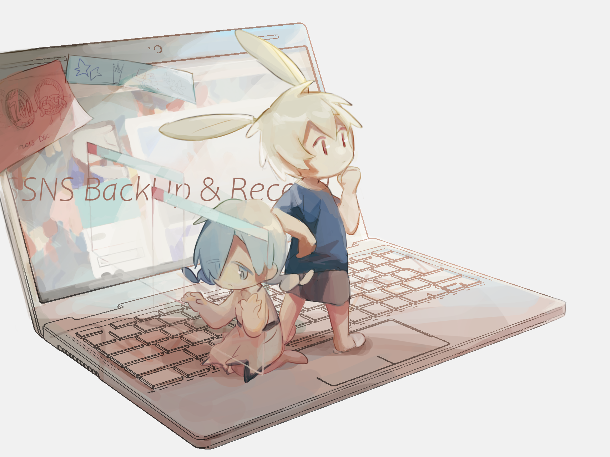

前言
感谢来访!!
这里是Mazui3的个人博客.
中之人
笔名是Mazui,称呼是麻醉.老熟人也叫我里约.
普通社会新人.驱动力是99%的兴趣和1%的承诺.
五分钟热度.见识少,希望能读很多很多的书.
某个post讲了关于博主名字的来源和两位形象的设定->麻醉和里约.
这个博客的使用准则
如果把其他使用平台比作餐厅的话,这里可以理解成餐厅后厨房一样的存在.
准则
- 内容包括并不限于自己的 画,生活,笔记和唠嗑 .
- 也有备份别人给我的图,作者有标注其他联系方式,没有标注的是对方没有营业用账号.
- 不要转载. 图片的保存ok! 任何使用不可.
- 为个人保存记录而使用.
- 博主编码技术稀烂,在各种意想不到的地方都可以有bug,提前道歉orz.
使用
电脑的左侧 以及 手机的上方 是博客的页面栏.
- Home: 博文主页面
- Readme: 这份说明
- Tags: 文章标签
包括 学习用标签 SQL, python 等,oc标签 在日落之前, 卡尔马 等,生活用标签 Thank you Mr.goose, 民以食为天, 年终总结等. - Categories: 文章种类
- Archives: 归档
- Schedule: ddl值班点
- FriendLink:
绝佳招募中的友联 - Back: 返回导航页
没有归纳在页面栏的页面:
报告(2022.02.27更新)
- 更新评论系统,从gitalk换成disqus.添加无登陆点赞/评论,需要翻墙.
- 添加导航页面,导航mazui3.com的网址会跳转到github地址的博客.
- 添加博客制作记录.
- 添加委托页面,停止中所以没有添加到页面栏中.
- 笔记更新偏多,名为好作品补全计划的读后感系列正绝佳拖稿中.
- 添加oc草稿导航页面,因为害羞所以是锁文.
在讨论“想要实现的事物”之前,有生存需求.无论是物理意义上的,还是精神自由上的.
但世界就是这样的吧?
不知道其他人是怎么样的.
分享自己的作品,对我来说像上到舞台上向着观众展示.
展示结束了,我还是会回到舞台下,掉入茫茫人海中的没有什么特别.
舞台上的我,是曾经的我,跟现在的我无关.
这样就可以了也足够了.
这里就是我记录所有的我的地方.
谢谢阅览,祝你生活平安.
图：oversleep twi